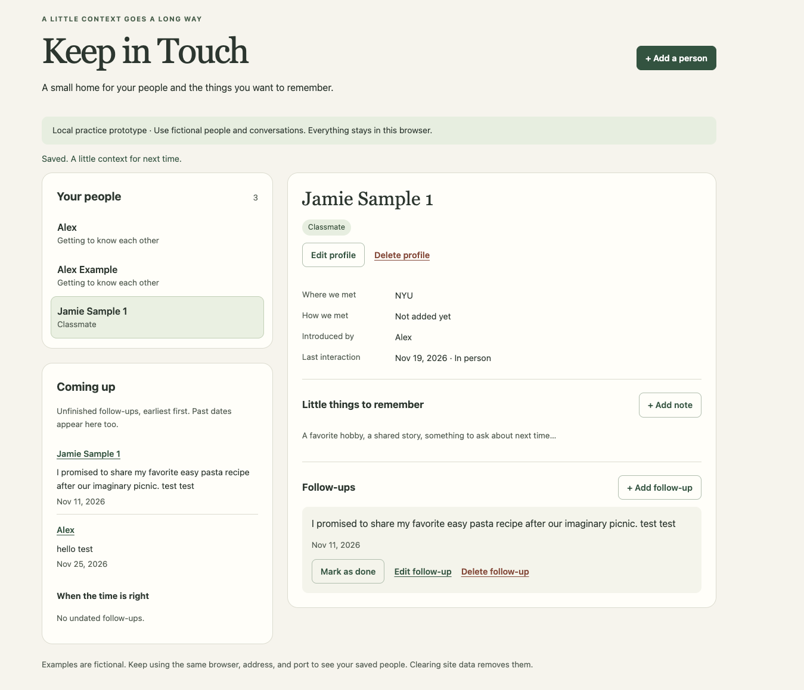

A name is only part of the story.
You meet someone, enjoy a conversation, and promise to send something later. The useful part is the context: where you met, who introduced you, and what mattered to them.
Keep in Touch is built around remembering that context and choosing a next step.
One person. One place to remember.
- Create or open a person’s profile.
- Save how you met and a note about your conversation.
- Add a follow-up, with a date if useful.
- Come back, read the context, and mark it done.
Working today
A small home for your people.
This screenshot shows the current working local prototype. The people, notes, and dates shown are examples. The app is not hosted online yet; this page is a product overview, not the live app.


Open the full-size screenshot
In the current prototype
- Profiles with meeting context, introducer, and multiple optional categories.
- A manually recorded most recent interaction date and type.
- Notes and follow-ups linked to each person.
- Optional follow-up dates, an upcoming list, and done status.
- Editing and deletion, with confirmation before deleting.
- Saving in this browser and importing the earlier follow-up list.
Ideas for later — not built
- Events involving more than one person.
- Context-aware message suggestions for the user to review.
- Connections to AI assistants.
- Connection suggestions, if future user feedback supports them.
Local by design for now. Entries stay in the browser on the device you use. There is no account or cloud sync. Clearing site data removes them. The current app does not generate messages or send reminders.
Living product requirements · Version 1
Remember the person behind the follow-up.
Who it is for, and how I can reach them
My first tester will be a classmate or friend I can ask to try the prototype in person. I will ask how they currently keep track of people and follow-ups before deciding what their main problem is. No tester’s identity is needed on this page.
Before: the workflow to learn about
Working hypothesis: remembering how you know someone, what you discussed, and what you promised can become difficult when the details are scattered or left to memory. This has not yet been confirmed in a user interview. I will ask my first tester to walk through a recent example and show me their current approach.
After: the intended workflow
After a conversation, open one person’s profile, record the context, and add a next step with an optional date. When it is time to reconnect, read that context before following up outside the app, then mark the item done.
One core workflow
- Remember a person: add their name and, if useful, where and how you met, who introduced you, and categories.
- Keep the context: add a note or update the most recent interaction.
- Choose a next step: write a follow-up and optionally give it a date.
- Return and finish: find the person from the people or follow-up list, read the context, and mark the follow-up done.
Non-goals for this version
- No group-event planning or attendance tracking.
- No automatic notifications or messages.
- No AI-generated message suggestions, AI-assistant connections, or connection recommendations.
- No login, cloud sync, contact import, or external integrations.
Main assumption and next test
The main assumption is that keeping context with a person will be useful enough for someone to return and update it. In an in-person test, I will ask a classmate or friend to use fictional data to create a person, add a note and follow-up, then find the context and mark the follow-up done. I will watch where they hesitate and ask whether this fits their current habits.
How this small prototype works
The app uses plain HTML, CSS, and JavaScript. People, notes, and follow-ups are saved in browser storage and linked by IDs, so a name change keeps related information together. A Python static server makes the local files available in a browser; it does not store the app’s entries.
The earlier follow-up list is imported only when the new storage format is absent. Exact matching names become one profile, and context, dates, and done status are preserved. The original list remains untouched in browser storage as a backup. No AI model or external service is called.
Build 1 · November 8, 2026
From a list of promises to a place for people.
- What works
- A local app with person profiles, notes, and follow-ups. Profiles include meeting context, multiple categories, and a most recent interaction. Items can be edited, follow-ups can be marked done, and deletions require confirmation. Browser storage keeps saved entries after a refresh.
- What I learned
- I learned how to use Codex in the terminal to build and test a small web app, and that browser storage can keep entries after a refresh.
- What changed
- I started with a list of follow-ups, then realized I wanted profiles where notes and follow-ups are connected to each person. The app now groups the earlier saved follow-ups into profiles while keeping the original data as a backup.
- What broke
- I have not identified a specific thing that broke to report yet. That does not mean the prototype has been fully tested with users.
- How it has been checked
- Ten automated data checks and Chrome browser workflow checks passed during prototype development. They cover migration, saving, editing, completion, deletion, and cancellation. Desktop appearance and phone-width fit were checked. Full manual keyboard, screen-reader, and real-device review remain to do.
- Next
- Ask a classmate or friend to try the core workflow in person, learn how they currently remember people and follow-ups, and use their feedback to decide what needs to change.